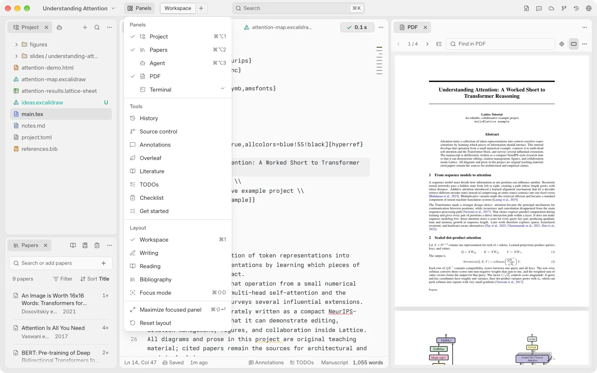
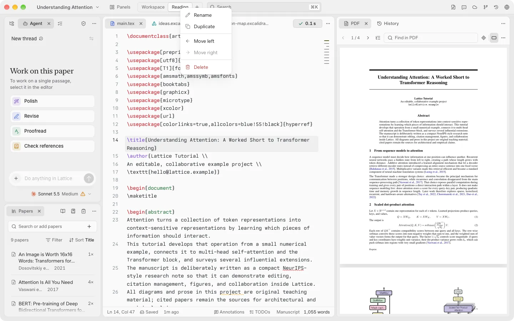

Panels and workspaces
Panels
Everything in the window is a panel: Project, Papers, Agent, PDF, Terminal, and tools such as History, Annotations, Overleaf, Literature, TODOs and Checklist. The Panels menu in the title bar shows or hides each one.

- Drag a panel's tab to dock it anywhere: beside, above or below another panel, or as a tab in its group.
⌘⌥1Project,⌘⌥2Papers,⌘⌥3Agent,⌃`Terminal show or hide those panels.⌘⇧↩maximizes the focused panel and restores the layout again.- Focus mode (
⌘⇧D) hides everything but the editor. - Reset layout in the Panels menu brings back any panel you closed.
The Panels menu also has three ready-made layouts: Writing, Reading and Bibliography.
Workspaces
A workspace is a saved arrangement of panels. They sit as tabs in the title bar, and ⌘1 to ⌘9 switch between them.
- Create: click + next to the workspace tabs. The new workspace starts from the layout on screen; type its name and press Return.
- Save changes: when you rearrange panels, the workspace tab shows a dot. Right-click the tab and choose Save to workspace, or Revert to saved.
- Rename: double-click the tab, or press F2.
- Reorder: drag the tab, or use Move left and Move right.
Delete a workspace
Right-click the workspace's tab and choose Delete. If right-clicking doesn't open the menu (some trackpad settings), select the tab and press ⇧F10. The deleted workspace can be brought back with Undo in the notice that appears. Delete is unavailable while it is the only workspace.

When the window is too narrow for tabs, the workspaces fold into one menu with the same actions.